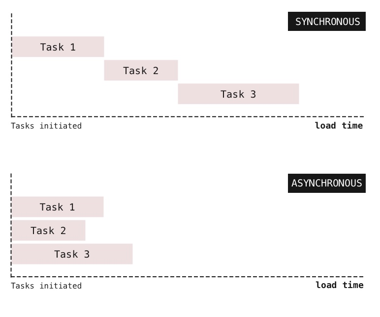
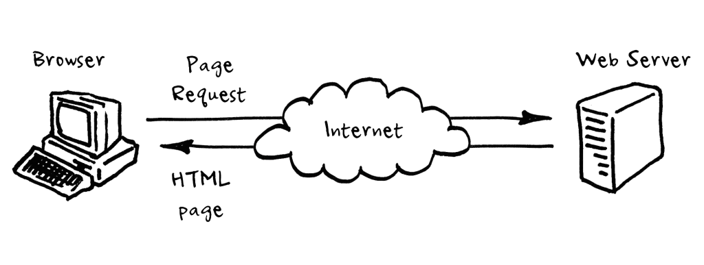
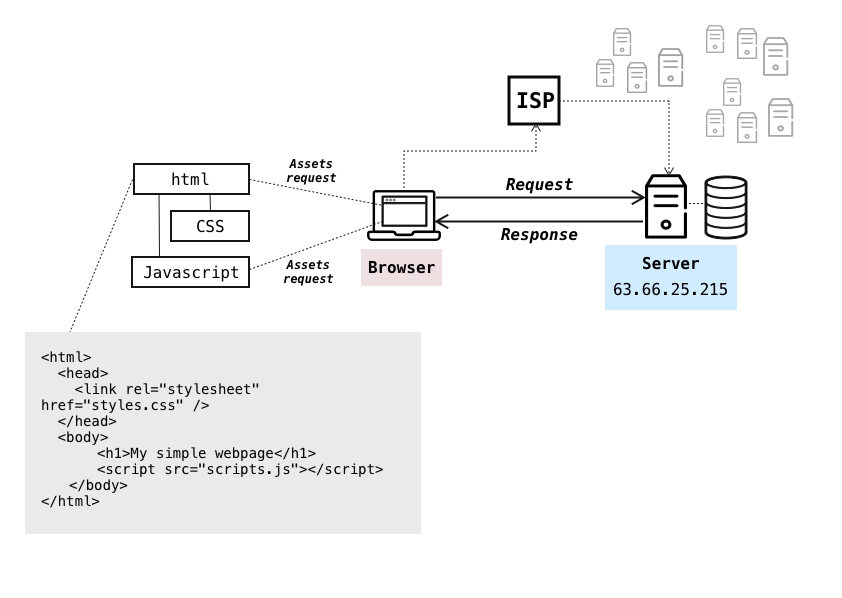

JavaScript Core II - 3
Learning objectives
In this lesson you will learn about Synchronous and Asynchronous programming and what is a callback, complex concepts that write code is needed to understand them. Also, you will understand the architecture client/server, what HTTP works and how to use fetch.
By the end of this lesson students should be able to:
- Define the difference between synchronous and asynchronous code
- Describe why writing asynchronous code is important when working with the internet
- Write code that is able to pass a function to another function as a parameter and run it
- Use callbacks to run code at some point in the future
- Define a client's and server's role in the client/server architecture
- Describe the difference between a GET and POST request
- Explain how resources are loaded on the internet using GET and POST
- List the steps that a browser does when loading a website from the internet
Contents
Synchronous and Asynchronous programming
In a synchronous programming model, tasks run one at a time. When a long running action starts, the program waits for it to finish and return the result before it moves to the next action.
Asynchronous programming allows multiple actions to happen at the same time. When a long running action starts, the program can continue to run. When the action finishes the program will get notified and get access to the result returned.

A real life example
An example of this in real life, are phone calls and text messages.
- Phone calls are
synchronousbecause you can't (really) do anything while the other person is speaking. You are always waiting for your turn to respond - Text messages are
asynchronous. When you send a text, you can go away and do something else, until the other person responds.
Javascript examples
Can you analyze in what order these messages will be printed?
//synchronous
console.log("First action");
console.log("Second action");
console.log("Third action");
//asynchronous
console.log("First action");
setTimeout(function () {
console.log("Second action");
}, 1000);
console.log("Third action");
And now?
//functions
function first(){
console.log("First action");
setTimeout(firstWithTimeout, 2000);
}
function firstWithTimeout(){
console.log("First action with timeout");
}
function second(){
console.log("Second action");
setTimeout(secondWithTimeout, 1000);
}
function secondWithTimeout(){
console.log("Second action with timeout");
}
function third(){
console.log("Third action");
}
//main
first();
second();
third();
As you can observe, functions in Javascript are asynchronous, the main code continues without waiting the function is finished. In some other programming languages, functions by default are synchronous.
Exercise A (15 min)
In folder InClass/A-timeout do exercise.js
Callbacks
We have already seen callback functions - in the Array methods forEach, map, filter etc. They are functions that are passed as parameter to another function.
In order to achieve asynchronicity, callbacks can be passed on functions that perform a slow action. By doing so, the callback function can be called with the result. This allows you to run some other code while you're waiting for something to finish.
function finished() {
console.log("The task has finished");
}
function thingThatTakesALongTime(callbackFunction) {
//... Task that takes a long time to complete
callbackFunction(); // This is where the 'console.log' happens
}
// Pass the function to 'thingThatTakesALongTime' just like a normal variable
thingThatTakesALongTime(finished);
A simple example of an asynchronous function is setTimeout. This allows you to run a function after a given time period. The first argument is the function you want to run, the second argument is the delay (in milliseconds)
// Separate function definition
function myCallbackFunction() {
console.log("Hello world!");
}
setTimeout(myCallbackFunction, 1000);
// Inline function
setTimeout(function () {
console.log("Hello world!");
}, 500);
Now let's use a timeout and a callback function together:
function mainFunction(callback) {
console.log("Starting!");
setTimeout(function () {
callback();
}, 1000);
console.log("Continuing!");
}
function myCallbackFunction() {
console.log("Finished!");
}
mainFunction(myCallbackFunction);
Exercise B (15 min)
In folder InClass/B-movies do exercise.js
How does the web work?
Client/Server architecture

A Client is the typical web user's internet-connected devices and apps. This can be a web browser, a Slack app, your phone, etc.
A Server is a computer or program that manages access to resources such as webpages, sites, or apps.
There are database servers, mail servers, game servers, etc. The vast majority of these servers are accessed over the internet. They can take the form of industrial server farms that provide a service to millions of users (used by Facebook, Google, etc.), to personal servers for storing your files.
The server communicates with clients.
Client–server systems use the request–response model: a client sends a request to the server, which performs some action and sends a response back to the client, typically with a result or acknowledgement.

HTTP Requests
A server stores the data, and the client (other programs or computers) requests data or sends some of its own. But how do they talk to each other?
For the client and the server to communicate they need an established language (a protocol). Which is what HTTP (Hypertext Transfer Protocol) is for. It defines the methods you can use to communicate with a server and indicate your desired actions on the resources of the server.
There are two main types of requests: GET and POST.
| Request type | Description |
|---|---|
| GET | Ask for a specified resource (e.g. show me that photo) |
| POST | Send content to the server (e.g. post a photo) |
HTTP is the language of the internet. In our case we're using Javascript, but you can send HTTP requests with other laguages as well.
The Network Tab
The network tab is a useful tool that helps us understand how content is loaded on a website.
You can view it by Right Click > Inspect > Network.
Take some time to look at the network tab when we open this lesson.
The important parts of the the Network Tab are:
- Network Log
- Timeline View
- Resource Details
Exercise C-1 (10 min)
Let's take a look at GET requests in the Browser.
Look at this repository here:
In your groups, you should try to work out what you expect to see in the Network tab when we look at it. You should create a list of the requests that will be made in this format.
You are not allowed to open the website in a browser
e.g.
- GET index.html
- GET format.de
- GET otherfile.se
- ...
When you have completed the list you should share it on Slack
You can see the website online here
Exercise C-2 (10 min)
Let's take a look at POST requests in the Browser.
You can see the website online here
At the bottom of the page you will see a series of buttons. When you click a button on the website it will send a POST request to a server.
- Using only the Network tab work out which button is sending a post request.
- What is in the
bodyof the post request?
Fetch
The interface through which browser JavaScript can make HTTP requests is called fetch. By default, fetch uses GET method. Calling fetch returns a promise that resolves to a Response object holding information about the server’s response, such as its status code and its headers. The first argument to fetch is the URL that should be requested. When that URL doesn’t start with a protocol name (such as http:). When it starts with a slash (/), it replaces the current path, which is the part after the server name.
The following code go to an API endpoint and get an object with weather information, as temperature and humidity. Execute the URL directly in the browser to see the structure and information of the result object
fetch('https://fcc-weather-api.glitch.me/api/current?lat=35&lon=160')
.then(function(response) {
console.log(response.status);
return response.json();
})
.then(function(myJson) {
//console.log(myJson);
console.log(myJson.main.temp);
});
Get more information about fetch in Developer Mozilla: Using fetch
Exercise D (15 min)
In folder InClass/D-fetch do exercise.js Going back to asynchronous programming, when the temperature will be printed? What if we have a code like this, predict the order of the console.log():
console.log("Starting...");
let URL = "https://fcc-weather-api.glitch.me/api/current?lat=35&lon=160";
fetch(URL)
.then(function(response) {
return response.json();
})
.then(function(myJson) {
console.log("Temperature is: " + myJson.main.temp);
});
console.log("Finishing...");
Homework
- From the Javascript/Core Module 2 repository review and finish all exercises in the folder
week-3/InClass - Complete exercises in the folder
week-3/Homework/alarmclock - Push the changes to your repository in Github
- Complete the Homework Form, to notify mentors and add comments and questions about the exercises
Practice Day (Saturday)
- Check together, solve doubts and fix the Homework exercises
- Complete the exercises in the folder
week-3/Homework - [Optional] Complete the exercises in the folder
week-3/Extra - Push the changes to your repository in Github